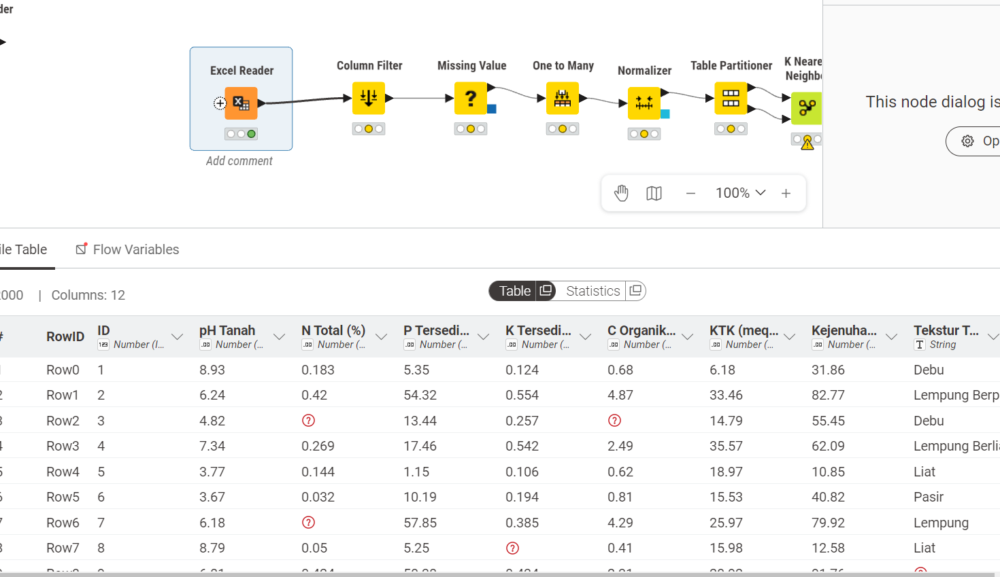
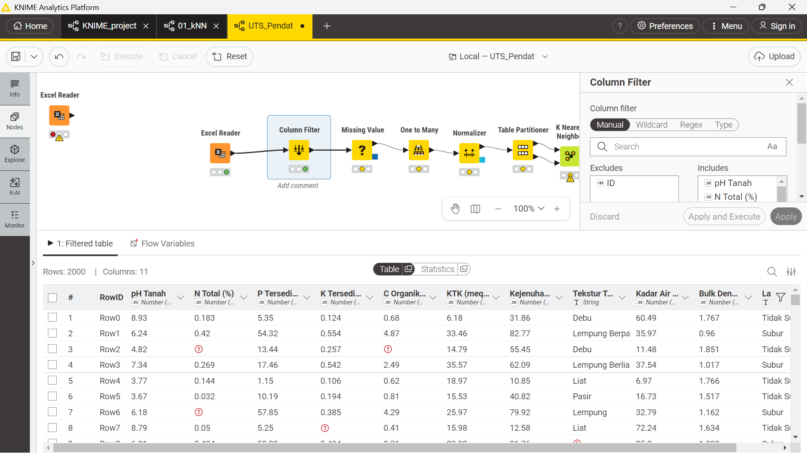
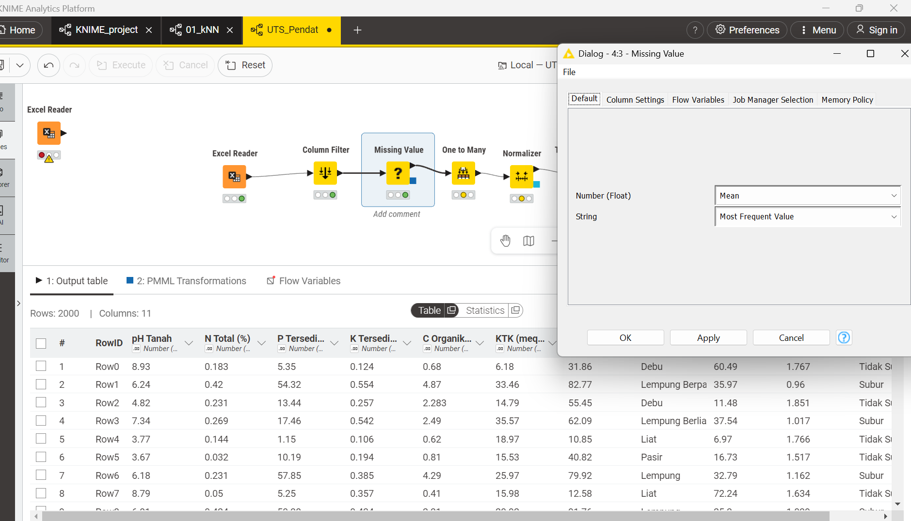
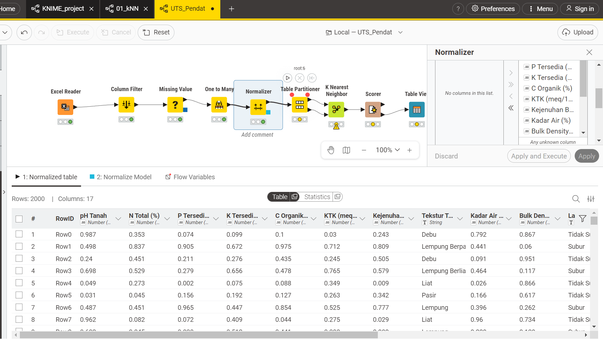
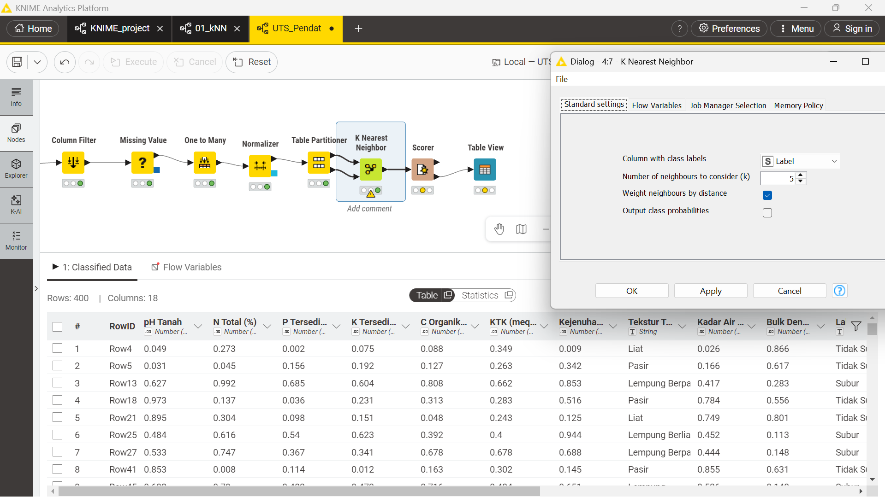
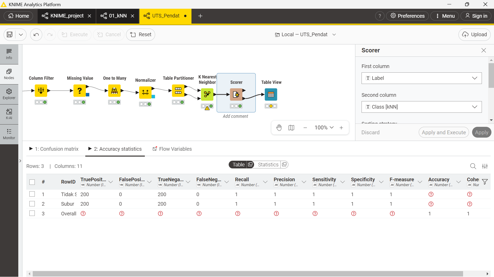

UTS Analisa Data Kesuburan Tanah#
NIM 240411100035#
Nama: Mohammad Dani Ferdiansyah#
Mata Kuliah Penambangan Data B#
Dosen Pengampu: Mula’ab, S.Si., M.Kom#
SOAL UTS#
Pendahuluan#
Kesuburan tanah merupakan faktor penentu utama produktivitas pertanian. Analisis ini bertujuan mengklasifikasikan kondisi tanah sebagai Subur atau Tidak Subur menggunakan algoritma K-Nearest Neighbors (KNN) berdasarkan parameter fisik dan kimia tanah.
Informasi Dataset#
Sumber Dataset: Google Spreadsheet - Dataset Kesuburan Tanah
Deskripsi Umum#
Atribut |
Keterangan |
|---|---|
Jumlah Sampel |
2.000 baris |
Jumlah Fitur |
10 fitur (9 numerik, 1 kategorikal) |
Jumlah Kelas |
2 kelas |
Target / Label |
Subur / Tidak Subur |
Missing Values |
Ada (beberapa kolom) |
Distribusi Kelas#
Subur : 1.000 sampel (50%)
Tidak Subur : 1.000 sampel (50%)
Total : 2.000 sampel
Dataset ini balanced (seimbang) - tidak ada bias jumlah kelas.
Penjelasan Fitur#
No |
Fitur |
Satuan |
Deskripsi |
Nilai Subur |
Nilai Tidak Subur |
|---|---|---|---|---|---|
1 |
pH Tanah |
Skala 0-14 |
Keasaman/kebasaan tanah |
6,0 - 7,5 |
< 5,4 atau > 7,6 |
2 |
N Total |
% |
Kandungan nitrogen total |
0,21 - 0,50% |
0,01 - 0,20% |
3 |
P Tersedia |
ppm |
Fosfor tersedia |
15 - 60 ppm |
1 - 14 ppm |
4 |
K Tersedia |
meq/100g |
Kalium tersedia |
0,30 - 0,80 |
0,05 - 0,29 |
5 |
C Organik |
% |
Karbon organik |
2,0 - 5,0% |
0,2 - 1,9% |
6 |
KTK |
meq/100g |
Kapasitas Tukar Kation |
20 - 45 |
5 - 19 |
7 |
Kejenuhan Basa |
% |
Persentase kation basa |
60 - 100% |
10 - 59% |
8 |
Tekstur Tanah |
Kategorikal |
Komposisi partikel tanah |
Lempung, dll |
Pasir, Liat, dll |
9 |
Kadar Air |
% |
Persentase kadar air |
25 - 45% |
< 20% atau > 55% |
10 |
Bulk Density |
g/cm3 |
Kerapatan tanah |
0,9 - 1,2 |
1,4 - 1,9 |
Definisi Kelas#
Label |
Deskripsi |
|---|---|
Subur |
Tanah dengan kondisi fisik, kimia, dan biologi optimal: pH seimbang, unsur hara cukup, tekstur ideal, struktur tanah baik. |
Tidak Subur |
Tanah dengan satu atau lebih kondisi pembatas: pH ekstrem, kekurangan unsur hara, tekstur buruk, kadar air tidak ideal, atau bulk density tinggi. |
Jawaban UTS#
Workflow KNIME#
Untuk mengerjakan soal ini, saya menggunakan KNIME Analytics Platform dengan menyusun node-node berikut secara berurutan:
Excel Reader -> Column Filter -> Missing Value -> One to Many -> Normalizer -> Table Partitioner -> K Nearest Neighbor -> Scorer -> Table View
Penjelasan Setiap Node#
1. Excel Reader#
Node pertama yang saya gunakan adalah Excel Reader. Saya pakai node ini karena dataset yang diberikan berformat .xlsx, jadi saya load langsung dari file Excel ke dalam KNIME.
Setelah saya konfigurasi path file-nya, node ini menghasilkan tabel data mentah berisi 2.000 baris dengan 11 kolom, yaitu 10 fitur dan 1 kolom label. Dari sini saya bisa lihat bahwa beberapa kolom masih ada yang kosong, tanda dataset memang punya missing value yang perlu ditangani.

Dari gambar di atas, saya bisa konfirmasi bahwa data sudah berhasil masuk ke KNIME. Semua kolom fitur seperti pH Tanah, N Total, P Tersedia, dan lainnya sudah terbaca dengan tipe data yang sesuai.
2. Column Filter#
Setelah data berhasil dibaca, saya sambungkan ke node Column Filter. Tujuannya satu: membuang kolom ID yang tidak saya butuhkan dalam proses klasifikasi.
Kolom ID itu cuma nomor urut baris, tidak ada informasi yang relevan soal kondisi tanah di sana. Kalau saya biarkan masuk ke model KNN, jaraknya bisa terganggu karena model akan ikut mempertimbangkan angka urut yang tidak ada hubungannya dengan kesuburan tanah.
Kolom yang saya pertahankan di panel Includes:
pH Tanah
N Total (%)
P Tersedia (ppm)
K Tersedia (meq/100g)
C Organik (%)
KTK (meq/100g)
Kejenuhan Basa (%)
Tekstur Tanah
Kadar Air (%)
Bulk Density (g/cm3)
Label

Dari gambar di atas terlihat kolom ID sudah berhasil saya pindahkan ke panel Excludes, jadi tidak akan ikut ke proses selanjutnya.
3. Missing Value#
Setelah kolom ID dibuang, saya sambungkan ke node Missing Value untuk menangani data yang hilang. Dari hasil eksplorasi awal, saya menemukan missing value di beberapa kolom, yaitu:
N Total (%)
P Tersedia (ppm)
K Tersedia (meq/100g)
C Organik (%)
Tekstur Tanah
Kadar Air (%)
Bulk Density (g/cm3)
Untuk mengisinya, saya menggunakan dua pendekatan:
Kolom numerik: saya isi dengan nilai mean (rata-rata) dari kolom tersebut.
Kolom kategorikal yaitu Tekstur Tanah: saya isi dengan nilai yang paling sering muncul (most frequent value).

Setelah node ini selesai dijalankan, semua baris data sudah bersih dari nilai kosong dan siap saya proses ke tahap berikutnya.
4. One to Many#
Selanjutnya saya tambahkan node One to Many untuk mengubah kolom kategorikal menjadi representasi numerik berupa kolom-kolom biner (dummy variable).
Kolom yang saya ubah adalah Tekstur Tanah, yang berisi nilai seperti:
Lempung
Lempung Berpasir
Lempung Berliat
Pasir
Liat
Debu
Saya perlu melakukan ini karena algoritma KNN bekerja dengan menghitung jarak antar titik data, sedangkan nilai teks tidak bisa langsung dihitung jaraknya. Dengan node One to Many, satu kolom Tekstur Tanah saya pecah menjadi beberapa kolom biner, misalnya:
Tekstur Tanah_Lempung |
Tekstur Tanah_Pasir |
Tekstur Tanah_Liat |
… |
|---|---|---|---|
1 |
0 |
0 |
… |
0 |
1 |
0 |
… |

Dengan begitu, fitur Tekstur Tanah sudah bisa ikut masuk ke perhitungan jarak dalam KNN.
5. Normalizer#
Setelah semua fitur sudah berbentuk numerik, saya tambahkan node Normalizer untuk menyeragamkan skala semua fitur menggunakan metode Min-Max Normalization.
Rumus yang digunakan:
Kenapa saya perlu normalisasi? Karena setiap fitur punya satuan dan rentang nilai yang berbeda. Misalnya, P Tersedia nilainya bisa puluhan (ppm), sementara N Total hanya berkisar antara 0,01 sampai 0,50 (%). Kalau tidak saya samakan skalanya, fitur dengan angka besar akan terlalu mendominasi perhitungan jarak, sementara fitur yang nilainya kecil jadi kurang diperhitungkan.
Setelah normalisasi, semua nilai fitur berada di rentang 0 sampai 1, jadi pengaruh setiap fitur lebih seimbang.

6. Table Partitioner#
Sebelum saya masukkan data ke model KNN, saya membagi data terlebih dahulu menggunakan node Table Partitioner.
Konfigurasi yang saya pakai:
First partition type: Relative (%)
Relative size: 80
Sampling strategy: Random
Dari total 2.000 data, hasil pembagiannya adalah:
1.600 data masuk ke partisi pertama sebagai data latih (training)
400 data masuk ke partisi kedua sebagai data uji (testing)

Saya membagi data seperti ini agar saat saya evaluasi model nanti, data yang diuji adalah data yang belum pernah dilihat model, sehingga hasilnya lebih objektif.
7. K Nearest Neighbor#
Ini adalah node utama yang saya pakai untuk melakukan klasifikasi. Node K Nearest Neighbor melatih model menggunakan 1.600 data latih dari partisi pertama, lalu memprediksi kelas pada 400 data uji dari partisi kedua.
Konfigurasi yang saya set:
Column with class labels: Label
Number of neighbors (k): 5
Cara kerja KNN yang saya pahami: setiap data uji akan dicari sebanyak k data paling dekat dari data latih. Kelas yang paling banyak muncul di antara k tetangga tersebut akan menjadi hasil prediksi. Di sini saya pakai k = 5, artinya saya lihat 5 tetangga terdekat untuk menentukan apakah tanah tersebut Subur atau Tidak Subur.
Rumus jarak yang dipakai adalah Euclidean Distance:

Setelah node ini selesai, output-nya berupa tabel lengkap dengan tambahan kolom Class [kNN] yang berisi hasil prediksi kelas untuk setiap baris data uji.
8. Scorer#
Setelah model selesai berjalan, saya sambungkan ke node Scorer untuk mengukur seberapa baik prediksi model dibandingkan dengan label aslinya.
Dari node ini saya mendapatkan:
Confusion matrix
Accuracy statistics
Nilai Precision, Recall, dan F-measure
Perlu saya catat bahwa di KNIME, F1-Score ditampilkan dengan nama F-measure, bukan F1-Score seperti yang umum dikenal.

9. Table View#
Node terakhir yang saya tambahkan adalah Table View. Saya pakai node ini untuk menampilkan hasil evaluasi akhir dalam bentuk tabel yang lebih mudah saya baca.
Kolom yang ditampilkan:
Recall
Precision
F-measure
Accuracy

Hasil Evaluasi Model#
Berdasarkan output yang saya peroleh dari node Scorer dan Table View, hasil evaluasi model KNN pada dataset kesuburan tanah ini adalah:
Metrik |
Nilai |
|---|---|
Accuracy |
1.00 (100%) |
Precision |
1.00 (100%) |
Recall |
1.00 (100%) |
F1-Score (F-measure) |
1.00 (100%) |
Confusion Matrix#
Dari hasil node Scorer, saya mendapatkan confusion matrix sebagai berikut:
Aktual / Prediksi |
Tidak Subur |
Subur |
|---|---|---|
Tidak Subur |
200 |
0 |
Subur |
0 |
200 |
Artinya:
200 data yang aslinya Tidak Subur berhasil saya prediksi dengan benar sebagai Tidak Subur
200 data yang aslinya Subur berhasil saya prediksi dengan benar sebagai Subur
Tidak ada satupun data yang salah prediksi
Perhitungan Metrik Evaluasi#
Berikut saya hitung masing-masing metrik secara manual. Saya anggap kelas positif adalah Subur.
Nilai dari confusion matrix yang saya dapat:
TP (True Positive) = 200, yaitu data yang saya prediksi Subur dan memang aslinya Subur
TN (True Negative) = 200, yaitu data yang saya prediksi Tidak Subur dan memang aslinya Tidak Subur
FP (False Positive) = 0, tidak ada data Tidak Subur yang salah saya prediksi sebagai Subur
FN (False Negative) = 0, tidak ada data Subur yang salah saya prediksi sebagai Tidak Subur
Accuracy#
Rumus:
Saya substitusikan nilainya:
Hasil: Accuracy = 100%
Precision#
Rumus:
Saya substitusikan:
Hasil: Precision = 100%
Recall#
Rumus:
Saya substitusikan:
Hasil: Recall = 100%
F1-Score#
Rumus:
Saya substitusikan:
Hasil: F1-Score = 100%
Interpretasi Hasil#
Dari hasil evaluasi yang saya peroleh, model KNN yang saya bangun berhasil memprediksi semua 400 data uji dengan benar tanpa ada satupun kesalahan klasifikasi.
Semua metrik, yaitu accuracy, precision, recall, dan F1-score, semuanya mencapai nilai 1.00 atau 100%. Menurut saya hal ini terjadi karena pola perbedaan antara tanah yang Subur dan Tidak Subur pada dataset ini cukup jelas dan terpisah, sehingga KNN dengan k = 5 bisa menangkapnya dengan sangat baik.
Kesimpulan#
Dari workflow KNIME yang saya buat, saya berhasil menyelesaikan analisis data kesuburan tanah secara end-to-end mulai dari membaca data sampai mendapatkan hasil evaluasi model. Berikut rangkuman tahapan yang saya kerjakan:
Excel Reader: saya baca dataset dari file .xlsx langsung ke KNIME
Column Filter: saya buang kolom ID karena tidak relevan untuk klasifikasi
Missing Value: saya isi nilai kosong, pakai mean untuk kolom numerik dan most frequent value untuk kolom Tekstur Tanah
One to Many: saya ubah kolom Tekstur Tanah dari kategorikal menjadi kolom-kolom biner agar bisa diproses KNN
Normalizer: saya samakan skala semua fitur numerik ke rentang 0 sampai 1 menggunakan Min-Max Normalization
Table Partitioner: saya bagi data menjadi 80% training (1.600 data) dan 20% testing (400 data)
K Nearest Neighbor: saya latih model KNN dengan k = 5
Scorer: saya bandingkan label asli dengan prediksi model untuk mendapatkan metrik evaluasi
Table View: saya tampilkan hasil evaluasi akhir dalam bentuk tabel
Model KNN dengan k = 5 yang saya bangun menghasilkan nilai Accuracy, Precision, Recall, dan F1-Score masing-masing sebesar 100%. Hasil ini menunjukkan bahwa model berhasil mengklasifikasikan seluruh 400 data uji dengan benar tanpa ada satupun kesalahan.